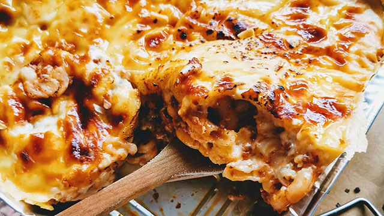

Baked
Macaroni &
Cheese
Baked Macaroni with a sweet-style meat sauce and cheese sauce topping recipe is sure to be a crowdfavorite. Includes bake or no-bake methods.

Baked Macaroni with a sweet-style meat sauce and cheese sauce topping recipe is sure to be a crowdfavorite. Includes bake or no-bake methods.
Serves 3-4 people
| Nutrient | Value |
|---|---|
| Calories | 370 kCal |
| Carbs | 45g |
| Protein | 7g |
| Fat | 18g |